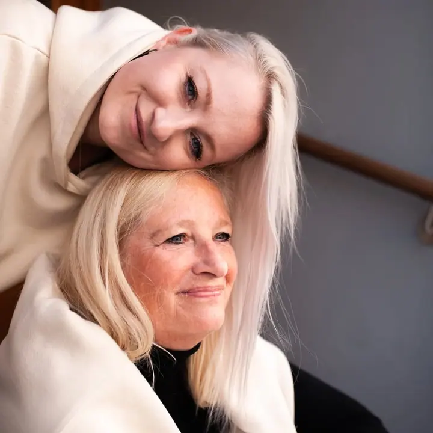
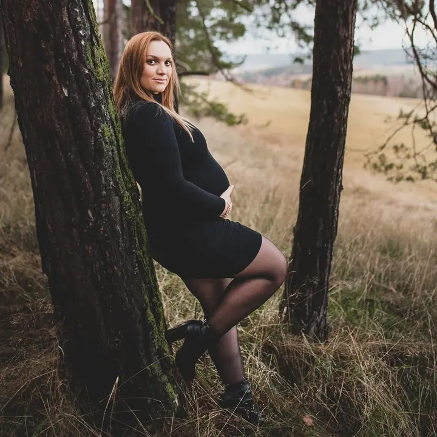
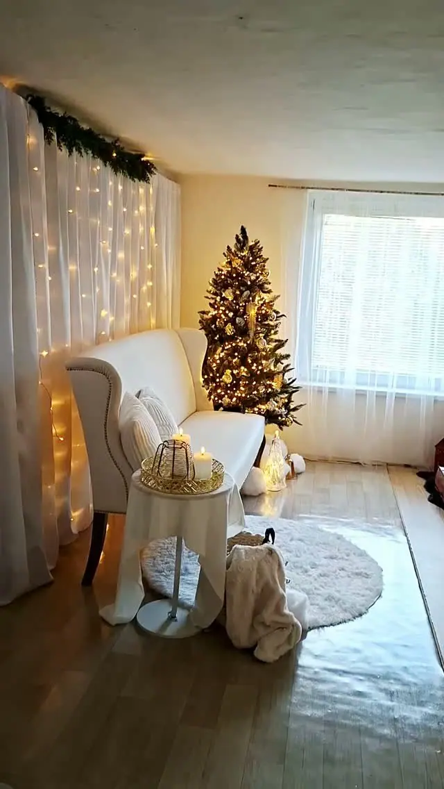

Rodinné focení
Společné chvíle, smích a objetí, na které budete vzpomínat dlouhá léta. Fotíme venku na louce, kde můžou děti běhat a trhat kytičky, nebo v útulném ateliéru.

Jmenuji se Jitka Rozsypalová a jsem fotografka z Příbrami, kde mám i svůj útulný ateliér. Fotím rodiny, svatby, maminky v očekávání a ta nejmenší miminka. Focení je hlav…
Rezervovat termínK focení jsem se dostala už v dětství, kdy mě nejvíc lákala příroda. Naplno mě to znovu chytlo asi před 13 lety, když jsem k narozeninám dostala svůj první pořádný fotoaparát. Pak už to šlo samo.


Přestalo mi stačit fotit jen krajinu a začala jsem se věnovat lidem. Naučila jsem se fotky upravovat, chodila jsem na různé fotokurzy a postupně si pořizovala další vybavení. Dnes už vím, že fotografie je něco, do čeho jsem se zamilovala.
V Příbrami jsem otevřela ateliér zařízený tak, abyste se v něm cítili jako doma. Najdete v něm tři útulné koutky, houpačku pro děti a místnost s černým a bílým plátnem. Ráda vám poradím s oblečením, s tím, jak na focení připravit děti, i s výběrem místa.
Co fotím
Společné chvíle, smích a objetí, na které budete vzpomínat dlouhá léta. Fotíme venku na louce, kde můžou děti běhat a trhat kytičky, nebo v útulném ateliéru.
Nejdřív si u kafíčka domluvíme celý váš den od A do Z a pak ho celý zdokumentuji. Nejsem jen fotografka, v den D vám pomůžu i s organizací.
Už vám roste malý melounek? Pojďme to zdokumentovat, ať už sama, s budoucím tatínkem nebo s psím kamarádem.
Ty nejmenší ručičky, první úsměvy a něžná objetí. Miminko fotím v ateliéru, nebo za vámi přijedu domů i s plátnem, košíky a světly.
Postup
Ozvěte se mi telefonem, mailem nebo přes formulář. Společně vybereme termín, místo i oblečení, u svatby se nejdřív potkáme osobně a projdeme každý detail.
Fotíme venku, kde je to pro děti nejpřirozenější, nebo v mém ateliéru v Příbrami. Dětem dám čas, aby se rozkoukaly, a bonbonky mám vždycky s sebou.
Pošlu vám náhledy a vy si z nich vyberete fotky k úpravě podle svého balíčku. Výběr mi prosím pošlete do 14 dní.
Vybrané fotografie upravím a předám vám je v elektronické podobě. U svatebního balíčku GOLD je dostanete v dárkové dřevěné krabičce s USB flash diskem.
Otázky
Klasické focení (rodina, pár, portrét, těhotenské focení, miminko) začíná balíčkem MINI za 1 500 Kč s 5 upravenými fotkami. STANDART s 15 fotkami stojí 2 800 Kč, MEGA s 30 fotkami 4 500 Kč.
Oblečení vybírejte bez vzorů a potisků. Pokud se fotí víc lidí, slaďte se nejlépe do tří barev, například béžové, bílé a zelené. Líčení zvolte o něco výraznější, než jste zvyklé.
Ano. Za příplatek 400 Kč k vám přivezu plátno, košíky, světla a všechno potřebné vybavení.
Při silném větru nebo dešti focení přesuneme na jiný termín. Zatažená obloha důvodem k přesunu není, světlo je pak naopak krásně měkké.
Svatební balíčky začínají na 9 000 Kč za 2 až 3 hodiny focení s obřadem, společnými fotkami a focením novomanželů. Celodenní balíček PREMIUM za 25 000 Kč zahrnuje 12 hodin focení.